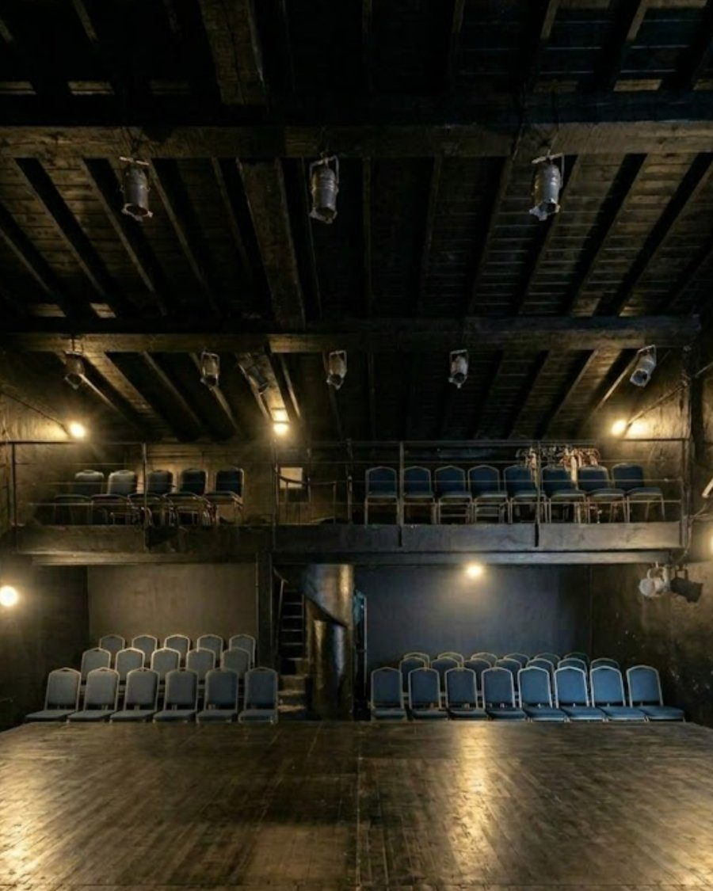

escuela de
formación actoral
Hace 10 años, Ezequiel Sagasti, fundó Teatro Consciente. Su propuesta se sostiene sobre estos pilares:
escenario
La escuela tiene su propio teatro y produce obras periódicamente. Los alumnos se forman con horas de vuelo reales en teatro.
formación
Programa con foco en la inserción profesional. Acerca a los alumnos a las dinámicas del medio desde el comienzo.
comunidad
Lo vincular es parte del ADN: una red que se acompaña, alienta y sostiene a lo largo del recorrido.
A lo largo de estos años, Ezequiel unió sus estudios en filosofía con el mundo actoral: investigó y desarrolló una nueva vía para la actuación, basada en la fenomenología de la percepción —en particular el pensamiento de Merleau-Ponty— aplicada al trabajo del actor.
Con este enfoque busca potenciar a sus alumnos para alcanzar una forma de actuar que les da la capacidad de habitar la escena, en vez de representarla.

el sueño del
teatro propio
La escuela tiene sede permanente en Pasaje Teatral, el teatro que Sagasti cofundó en 2024 en la zona de Vicente López, Buenos Aires. La sala principal cuenta con capacidad para un público de 50 personas.
